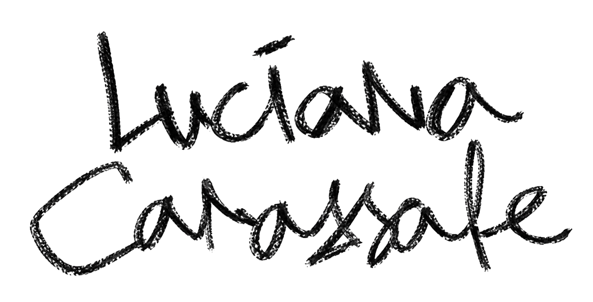

Luciana Carassale — Graphic Designer, Art Director and Creative Director, Buenos Aires

- Graphic Design
- Visual Identity
- Art Direction
- Experiential Design
Creating visual worlds through art direction, design and storytelling, from creative campaigns to brand experiences.
- Creative Direction
- Brand Storytelling
- Editorial Design